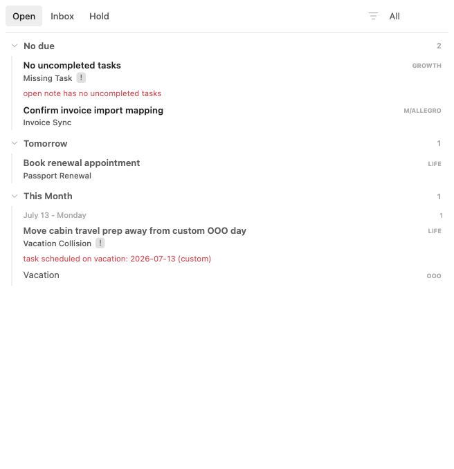
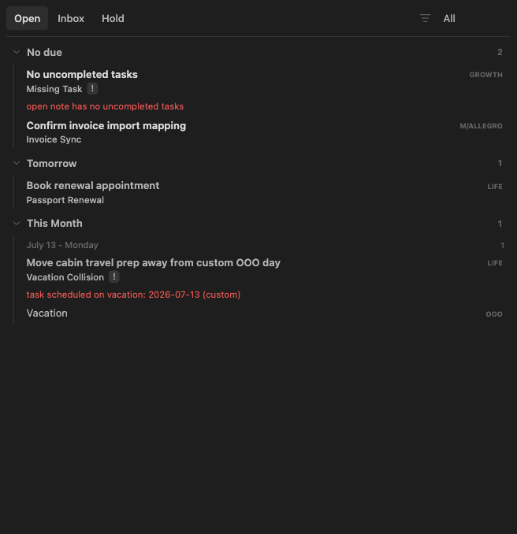

Feature
Board task controls
Board rows expose task actions for completing the next task and shifting due dates without opening the note.
Rationale
Why it exists.
Why Board Task Controls Exist
The board is meant to be a working surface, not just a report. If the next action is clear, the user should be able to complete it or move its due date without opening the note and editing Tasks syntax by hand.
Tasks Eye keeps the note as the durable record. The controls are only shortcuts for changing the exact task line represented by the visible row.
Executable documentation
Acceptance criteria.
- Rows with an unfinished task show a complete button.
- Rows with a due date show
+1,-1,+7, and-7due-date controls. - Shifting a due date updates the matching Tasks due marker in the note.
- Completing a task delegates to the Obsidian Tasks API and refreshes the board.
Screenshots
Generated by WDIO.



Fixtures
Shared vault examples.
acceptance/fixtures/base/Db/Mission/Allegro/Invoice Sync.md